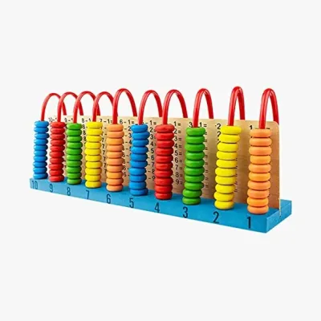
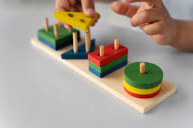
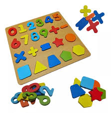

Los juegos didácticos son herramientas pedagógicas que combinan el aprendizaje con el entretenimiento, permitiendo a los niños y adultos adquirir nuevos conocimientos de manera lúdica. Estos juegos están diseñados para fomentar el desarrollo cognitivo, emocional y social de los participantes, facilitando la comprensión de conceptos abstractos de una forma divertida y accesible. Los juegos didácticos pueden adoptar diversas formas, desde juegos de mesa hasta aplicaciones digitales, y están orientados a enseñar habilidades específicas, como el lenguaje, las matemáticas, la resolución de problemas o las ciencias.


